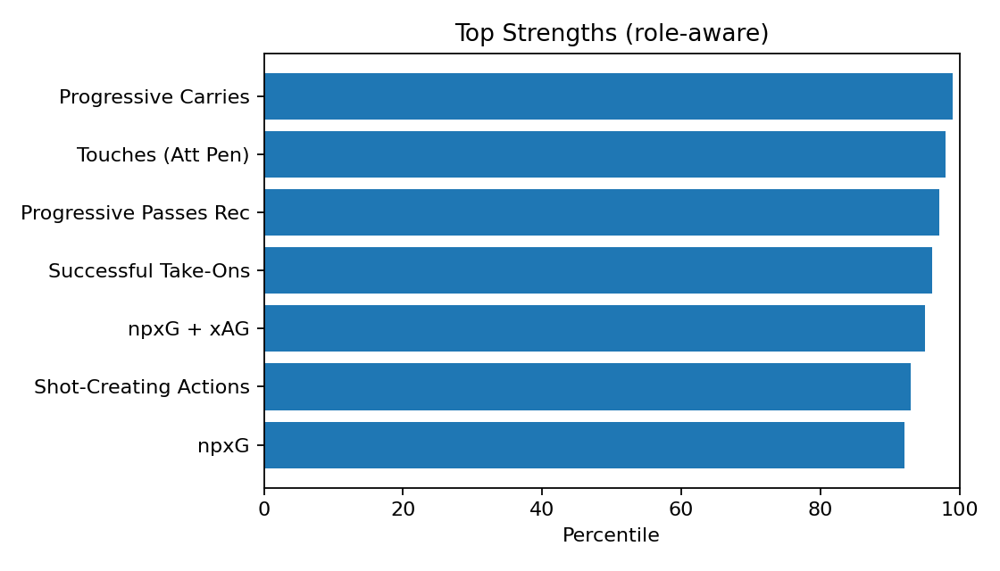
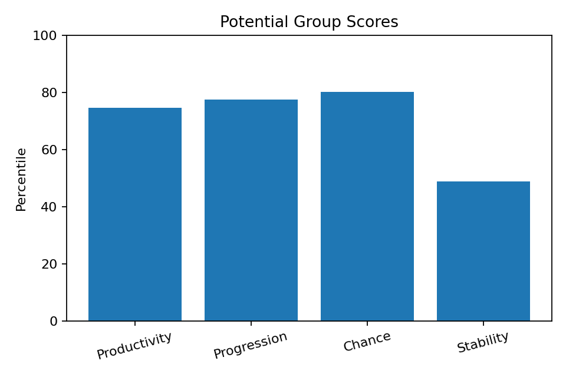
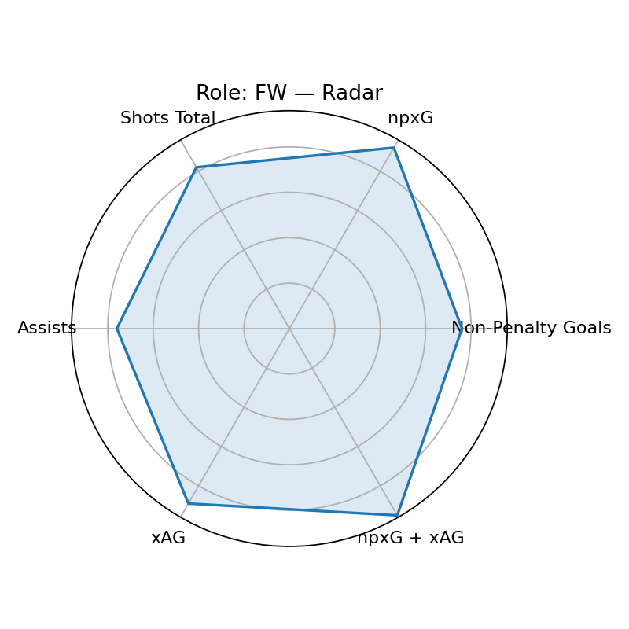

Scout Visual — Estêvão Willian
Player ID: 2eda11b1 · Role: FW · Minutes: 1806 · Age: 18
Current: None (base None, rel None, age None)
Potential: 87.7 — Groups: 74.6/77.5/80.2/48.8
Top Strengths

Weaknesses

Potential Groups

Role/Style Radar

Playstyle Engine
Primary: Inverted Winger (92.6)
Top-3: Inverted Winger(92.6), Traditional Winger(91.6), Inside Forward(86.0)
근거: Shots Total 상위 82퍼센(강점) · npxG 상위 92퍼센(강점) · Shot-Creating Actions 상위 93퍼센(강점) · Successful Take-Ons 상위 96퍼센(강점) · Touches (Att Pen) 상위 98퍼센(강점) · Progressive Carries 상위 99퍼센(강점)
개선: 핵심 보완 포인트 없음(상대적 우수)
Wikipedia-derived Qualitative
Qual Score: 100.0
injury=0, discipline=0,
transfer=0, char+= 0,
char-= 0, recent_w=1.0
Wikipedia: https://en.wikipedia.org/wiki/Est%C3%AAv%C3%A3o%20Willian
Bias Diagnostics
Mode: v3
Diversity: 0.925
Imbalance penalty: 6.3
Uncertainty penalty: 2.5
Age gain: 10.0
Narrative — Current
[현재력] 역할=FW, 최종점수=88.2 / 강점: Progressive Carries(99p), Touches (Att Pen)(98p), Progressive Passes Rec(97p), Successful Take-Ons(96p), npxG + xAG(95p) / 기초=81.5, 출전보정=1.3, 나이표시=8.0
Narrative — Potential
[잠재력 v3] 역할=FW, 잠재점수=87.7 / 그룹: 생산74/전진77/찬스80/안정48 / 엘리트95+ 20, 99+ 4, 다양성=0.925 / 불확실성패널티=2.5, 불균형패널티=6.3, 나이이득=10.0
Coaching — Style-specific
- Shots Total 유지+응용: 역압박 상황 전개/선택지 추가 / 주 1회(클립 5개)
- npxG 유지+응용: 역압박 상황 전개/선택지 추가 / 주 1회(클립 5개)
- Shot-Creating Actions 유지+응용: 역압박 상황 전개/선택지 추가 / 주 1회(클립 5개)
- Successful Take-Ons 유지+응용: 역압박 상황 전개/선택지 추가 / 주 1회(클립 5개)
- Touches (Att Pen) 유지+응용: 역압박 상황 전개/선택지 추가 / 주 1회(클립 5개)
- Progressive Carries 유지+응용: 역압박 상황 전개/선택지 추가 / 주 1회(클립 5개)
Growth Roadmap — Phased
- · 0~6주: 기술 스킬 볼륨 확장(주 3세션) / 파이널 서드 의사결정 트리 15분 / 컷인→원터치/투터치 마무리 50회 / 하프스페이스 진입 각 만들기(콘 패턴)
- · 6~12주: 슈팅 의사결정(니어/파/리턴) 시뮬 20세트 / 좌우 발 동일 루틴(균형)
- · 12주+: 상위권 DF 상대 1v1 클립 5개 분석·복기 / xG 대비 득점 효율 5%p↑ / Shots Total: 82→85 퍼센 상향 / npxG: 92→85 퍼센 상향